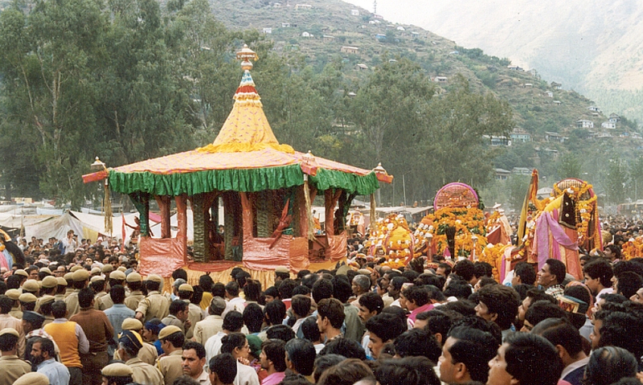
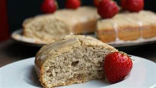

About Manali
Manali is a beautiful valley town in Himachal Pradesh, popular for snowy mountains, adventure sports, and honeymoon trips. It’s surrounded by the majestic Pir Panjal and Dhauladhar ranges.
Culture & Traditions
- Home to Kullu culture with folk music, handicrafts, and temples
- Celebrates Kullu Dussehra and Winter Carnival
- Locals wear colorful woolen clothes, Himachali caps, and shawls

Famous Dishes
- Sidu (steamed stuffed bread)
- Aktori (buckwheat cake)
- Trout Fish
- Red Rice with Rajma

Best Time to Visit
- April to June – for greenery and pleasant weather
- December to February – for snow, skiing, and winter adventures
Budget (Per Day)
- Budget: ₹1200–₹1800
- Mid-range: ₹2000–₹3500
- Luxury: ₹4500+
Things To Do
- Visit Solang Valley and enjoy paragliding, skiing, ziplining
- Explore Rohtang Pass and Atal Tunnel
- Relax in hot springs at Vashisht Village
- Visit Hidimba Devi Temple and Old Manali cafes